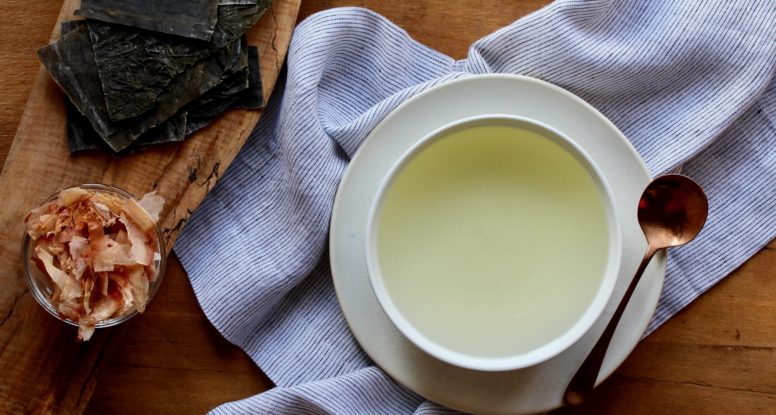

Basic Japanese Dashi Recipe

Description
This fundamental Japanese soup stock only calls for two ingredients, plus water, and is the flavor-packed base for all our favorite miso soup recipes.
Ingredients
Steps
- Combine water and kombu in a medium saucepan. Bring to a bare simmer over medium heat.
Remove from heat and add bonito flakes. Let stand for 5 minutes.
Strain through a fine mesh strainer and discard kombu and bonito, or reserve to make a second, weaker batch of dashi.
Dashi can be stored in the refrigerator for up to 1 week.
Notes
Kombu and shaved katsuobushi is widely available at Japanese grocers or in the Asian section of most large supermarkets.